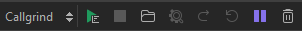
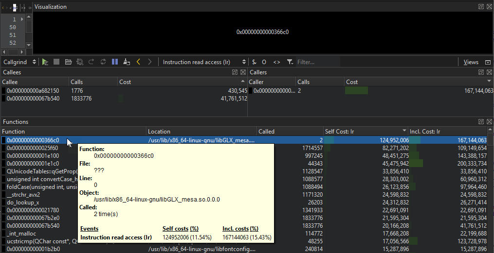

Profile function execution
With the Callgrind tool in Valgrind's Tool Suite, you can detect problems that are related to executing functions. Load the data files generated by Callgrind into the KCachegrind profile data visualization tool to browse the performance results.
After you download and install Valgrind tools and KCachegrind, you can use Callgrind and KCachegrind from Qt Creator.
Note: You can install and run Callgrind and KCachegrind locally on Linux. You can run Callgrind on a remote Linux machine or device from any computer.
Build apps for profiling
Callgrind records the call history of functions that are executed when the application is run. It collects the number of instructions that are executed, their relationship to source lines, the relationships of the caller and callee between functions, and the numbers of such calls. You can also use cache simulation or branch prediction to gather information about the runtime behavior of an application.
Since the run-time characteristics of debug and release build configurations differ significantly, analytical findings for one build configuration may not be relevant for the other. Profiling a debug build often finds a major part of the time being spent in low-level code, such as container implementations, while the same code does not show up in the profile of a release build of the same application due to inlining and other optimizations typically done there.
Many recent compilers allow you to build an optimized application with debug information present at the same time. For example, typical options for GCC are: -g -O2. It is advisable to use such a setup for Callgrind profiling.
Collect data
To analyze applications:
- Go to the Projects mode, and select a release build configuration.
- In the mode selector, select Debug > Callgrind.

- Select
 to start the application.
to start the application. - Use the application to analyze it.
- Select
 to view the results of the analysis in the Functions view.
to view the results of the analysis in the Functions view.
Select to speed up program execution during profiling by pausing event logging. No events are counted while logging is paused.
Select  to reset all event counters.
to reset all event counters.
Select to discard all collected data.
Select to view the data in KCachegrind. Qt Creator launches KCachegrind and loads the data into it for visualization.
View collected data
The results of the analysis are displayed in the Callgrind views. You can detach views and move them around. To revert the changes, select Views > Reset to Default Layout.
Select Views to show and hide views and view titles. The Visualization view is hidden by default. Select to refresh the data displayed in it when it is shown.
As an alternative to collecting data, you can select  to load an external log file into the Callgrind views.
to load an external log file into the Callgrind views.

Enter a string in the Filter field to filter the results.
Move the cursor on a function in the Functions view for more information about it.
Double-click a function to view information about the calling functions in the Callers view and about the called functions in the Callees view.
Select  or
or  To move between functions in the Callee view.
To move between functions in the Callee view.
To set the cost format, select $. You can view absolute or relative costs, as well as relative costs to parent. Select  to view only profiling info that originated from the project.
to view only profiling info that originated from the project.
To properly handle recursive or circular function calls, enable cycle detection by selecting O.
To remove template parameter lists when displaying function names, select <>.
See also Detect memory leaks with Memcheck, Profile function execution, Run Valgrind tools on external applications, Specify Valgrind settings for a project, Valgrind Callgrind, and Valgrind Memcheck.